Chapter 3 Two Categorical Variables
The dbRUSPClinical application generates a different set of plots when the two variables selected by the user are categorical. Let us examine these plots in this chapter.
3.1 Basic plots
When the user selects two categorical variables for variable one and variable two, and do not select any variables for stratification variable one and stratification variable two as below,
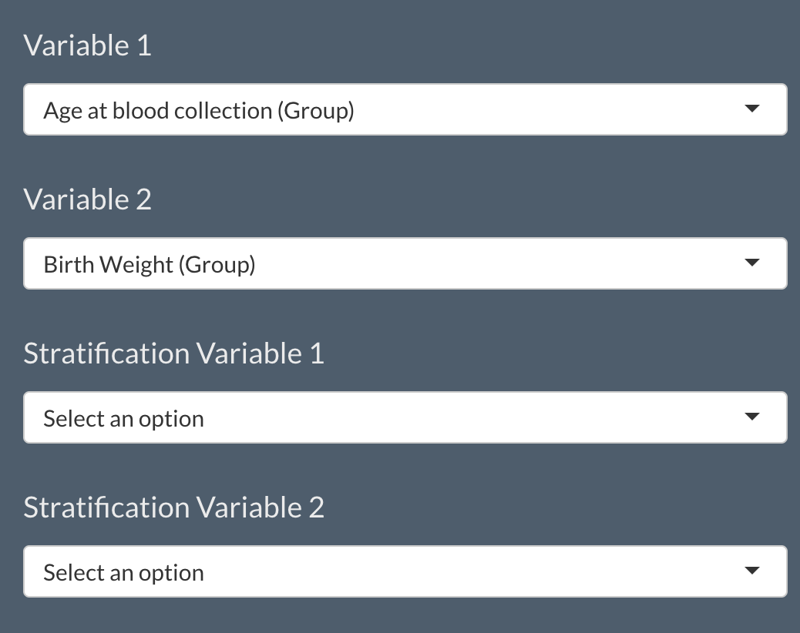
The application generates one bar plot and one counts plot.
Barplot: 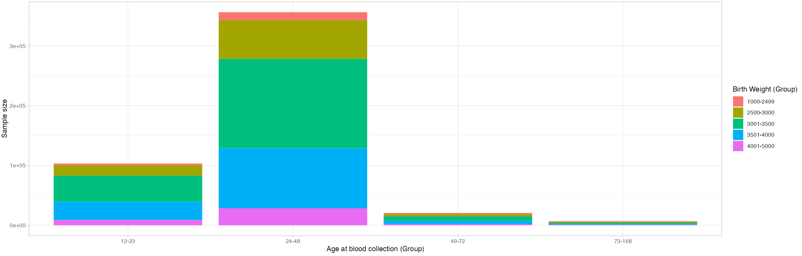
Countsplot: 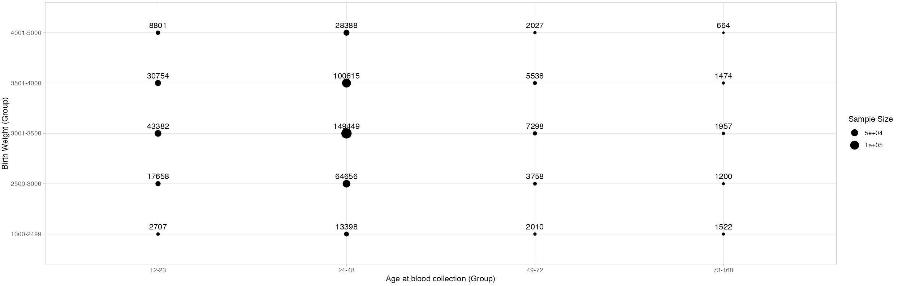
It is clear that the plots are showing sample sizes. When the plots are generated, the users are given an option to switch between sample sizes and sample proportions. On the side panel, the user can select an appropriate radio button to see either the sample sizes or the sample proportions. See the below image.
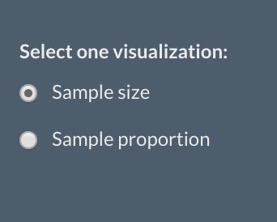
When the user switches the option to Sample proportion, the bar plot and the counts plot shown above are transformed to show sample proportions.
Barplot(proportions): 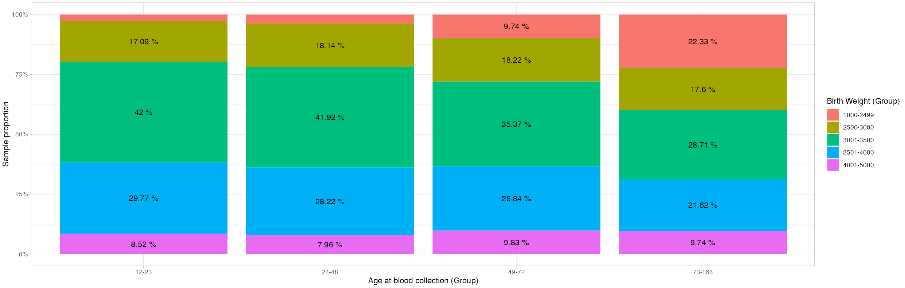
Countsplot(proportions): 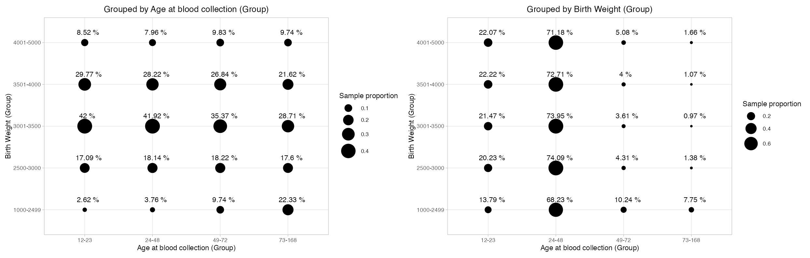
Now that we have seen the basic plots, let us see how the plots change when the user selects stratification variables.
3.2 Plots with one stratification variable
When the user selects only one stratification variabe, i.e., either stratification variable one or stratification variable two, along with the variable one and variable two, the basic plots as seen in the previous section would be generated, and along with them, two more plots are shown. One counts plot where the counts are shown separately for each category of the selected stratification variable and one bar plot with inbuilt distinct plots for each category of the selected stratification variable. For example, if the user selects Sex as the stratification variable, the following two plots are shown along with the basic plots.
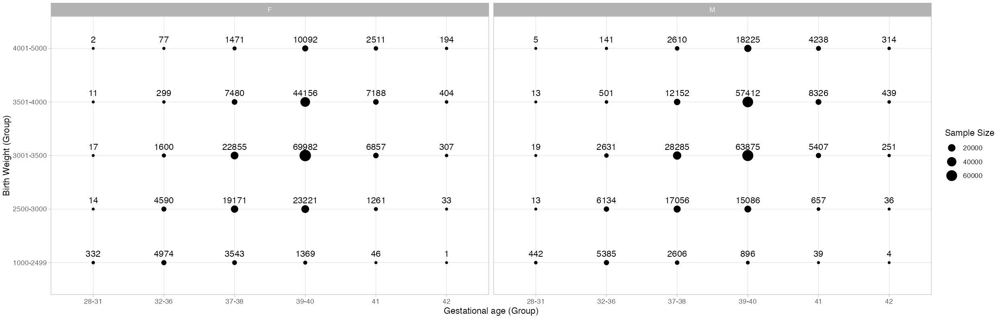
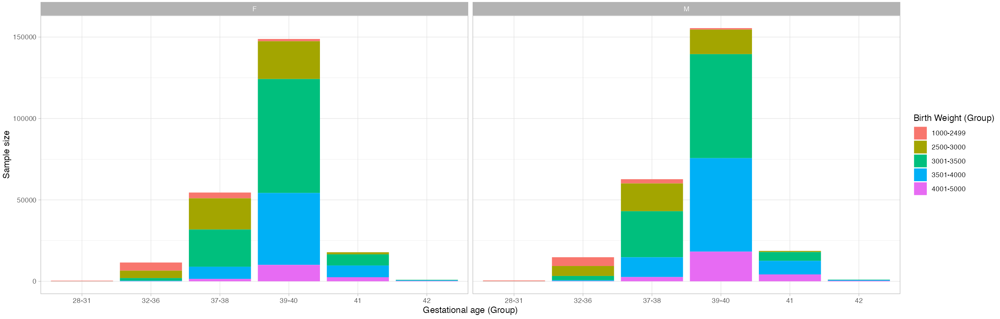
When the user selects sample proportions instead of sample size, the above plots would be transformed as below.
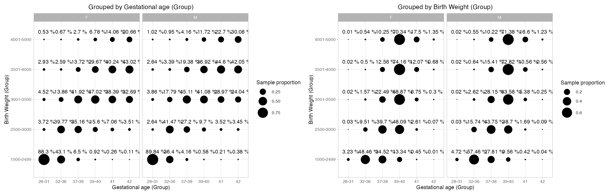
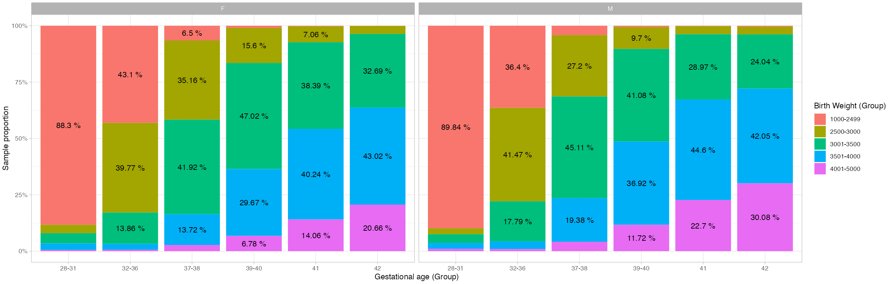
In the Counts plot, when the user selects the sample proportions option, the proportions are grouped by the variables and are shown separately for each variable. For example, in the above counts plot, the User has selected Gestational Age(Group) and Birth Weight(Group). We can see that two separate plots are shown for each gender. In the plot where the data points are grouped by Gestational Age(Group), the proportions are shown separately, for each of its categories. This is same with the other variable Birth Weight(Group).
3.3 Plots with two stratification variables
If the user selects two stratification variables, say Sex and Ethnicity(Major), then the application generates the plots shown in previous section for both the selected stratification variables. This means that, one more set of Counts plot and the Bar plot are generated for the stratification variable Ethnicity(Major).
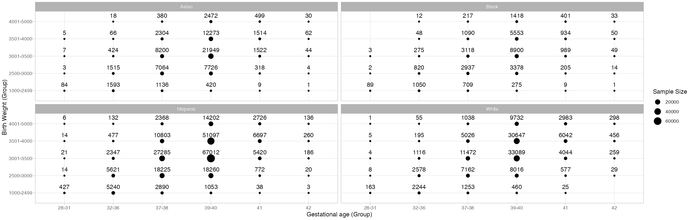
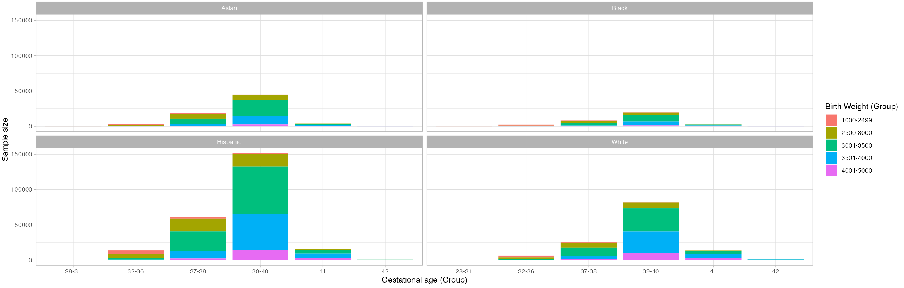
The plots shown above depict sample sizes. The user always has an option to change the view to sample proportions. However, generating proportion plots might take time, depending upon the stratification variables the user selects.